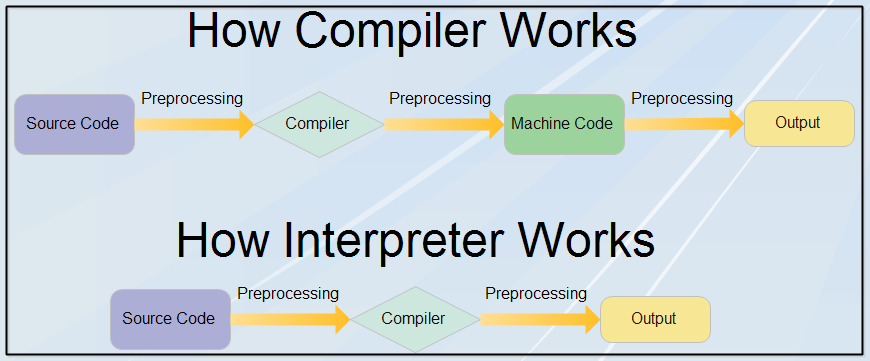

Introduction
Explanation of the compilation and interpretation processes.
Importance of understanding the differences between compiled and interpreted languages in the context of software development.
Compiled Languages
Definition and Characteristics
- Explanation of compiled languages being translated into machine code before execution.
- Examples: C, C++, Rust.
Key Concepts
- Compiler:
- Source code is transformed into an executable file by a compiler.
- Compilation is done before the program is run.
- Execution Speed:
- Generally faster execution as the code is already in machine language.
- Portability:
- Compiled code may be less portable, requiring recompilation for different platforms.
Advantages
Performance:
- Generally, better performance due to direct machine code execution.
Optimizations:
- Compilers can apply various optimizations during the compilation process.
Security:
- Code is distributed in an already compiled form, making it harder to reverse engineer.
Disadvantages
Portability:
- Requires recompilation for different platforms.
Development Speed:
- Longer development cycles due to the compilation step.
Interpreted Languages
Definition and Characteristics
- Introduction to interpreted languages, where code is executed line by line. Examples: Python, JavaScript, Ruby.
Key Concepts
Interpreter:
- Code is executed by an interpreter at runtime. No separate compilation step.
Execution Speed:
- Generally slower than compiled languages as interpretation occurs during runtime.
Portability:
- Code is often more portable, as it can be run on any platform with the appropriate interpreter.
Advantages
Portability:
- Generally more portable, as the code can be distributed in its original form.
Development Speed:
- Faster development cycles as there is no compilation step.
Debugging:
- Easier debugging since errors are identified at runtime.
Disadvantages
Performance:
- Generally slower execution speed due to interpretation overhead.
Security:
- Code is distributed in source form, making it more accessible and easier to reverse engineer.

Choosing Between Compiled and Interpreted Languages
Project Considerations
Performance Requirements
Portability
Development and Debugging
Conclusion
Recap of key points about compiled and interpreted languages.
Emphasize the importance of choosing the right type based on project requirements.
Acknowledge the existence of hybrid approaches (e.g., just-in-time compilation).
Encourage developers to consider the trade-offs and experiment with both types.